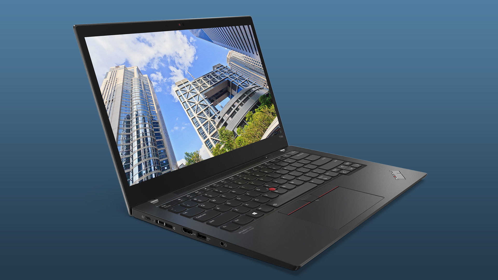
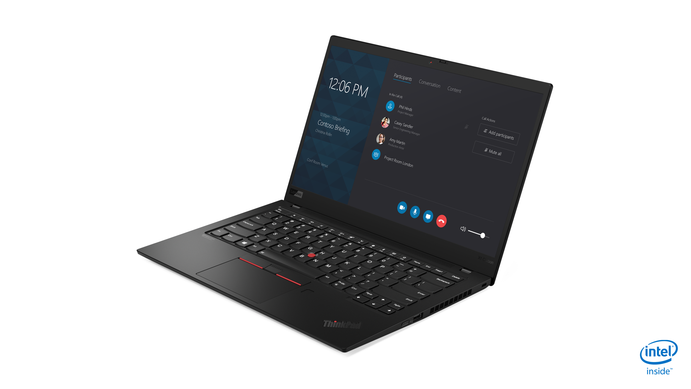
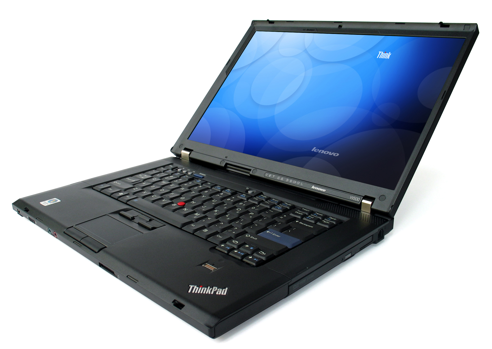
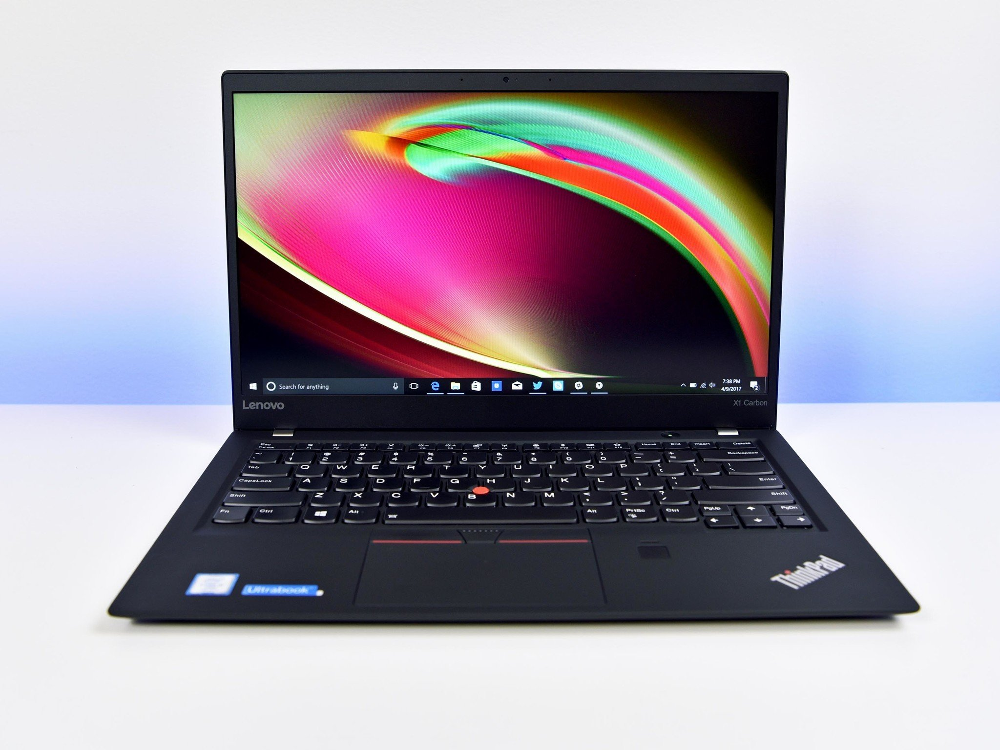
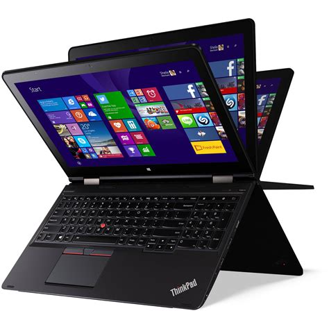

Overview
ThinkPads are business-grade laptops with a focus on durability and upgradability, even though some recent models have components like RAM soldered onto the motherboard
They are known for excellent keyboards, long battery life, and excellent build quality.
Due to their business focus, they typically perform better than regular consumer and even prosumer laptops in the same price ranges
Why ThinkPad
- TrackPoint: The red nub on the keyboard is great for using the cursor without moving your hands aeay from the keyboard
- Spill-resistant keyboard
- Excellent keyboard
- High Endurance
- Older models have indicator LEDs
- Upgradability: Almost every model has Hardware Maintainence Manuals avaliable
- Linux: ThinkPads have good linux compatibility, great for people who are fed up with windows.
Naming Scheme
Format: letter number number number letter
T: Thin 14-15" Medium sized laptop
X: More portable T series, with 12-13" screens, with the loss of some upgradability
W: Portable workstations; these have increased thickness for gains in CPU and GPU. These ususally have more room for upgradability
P: Current workstation line. Main difference is that they are thinner
X1: Modern flagships, thin and relatively powerful, around the MacBook Air
X1 Extreme: Much more powerful, similar to the MacBook Pro. They have much better performance and have a great balance of power, weight and durability, however a slight loss of battery life is the tradeoff
First number: Screen size eg. 4 -> 14", 6 -> 16"
Second number: Generation
Third number: Generation Revision
Second Letter: Extras eg. y -> Yoga, p -> Power
T Series
Medium sized laptops
letter s: Slimmer than the regular ones, however have slightly worse battery life and slightly more expensive
letter p: More powerful, these have better CPUs and usually get dGPUs, however are thicker and heavier
letter i: Lower specs usually come with i3s or Celerons
X Series
Smaller laptops
letter s: Slimmer than the regular ones, and have CPUs that run at a lower voltage so have better battery life, however lose a bit of CPU performance
W Series
Portable workstations
These have increased thickness for CPU and GPU gains. These usually have more room for upgradability
X1 Carbon Series
Thin and Light
Similar in size to a MacBook Air, however more powerful, durable and upgradable
Yoga Series
2 in 1 Laptop and Tablet
These have the power, durability, keyboard, and TrackPoint of ThinkPads, but include touchscreens and a 360 degree hinge, allowing for more use cases.
Support and Resources
For any questions or concerns about your ThinkPad, you can visit the official Lenovo support website for documentation, drivers, and troubleshooting guides.